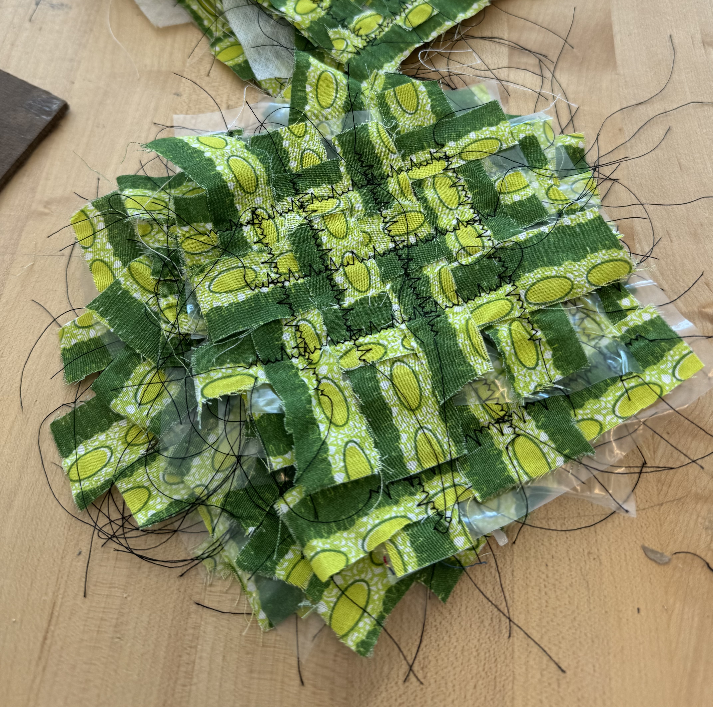

Senior Design Project
For my capstone level engineering course, students were given an opportunity to work, as a group, with a customer whose specific requests dictated the prototype developed. My group worked with RECLEM, a sustainable fashion project, to develop a low intensity washing machine prototype. RECLEM fashion pieces are made by layering fabric scrap strips on top of one another and sewn together using a quilting machine. The problem to be solved was the fabric backing, a sticky, water-soluble material, had to be washed off the pieces before the front and backs could be sown together. Our solution was a top-down washing approach, inspired by commercial dishwashers. Unfortunately, the scale of the clothing pieces meant they had to be fed through the machine, rather than enclosed. This led us to the development of a conveyor belt system, using components sourced from a sewing machine. Our final design is shown in more detail in the report, or in the video we made for our presentation!
